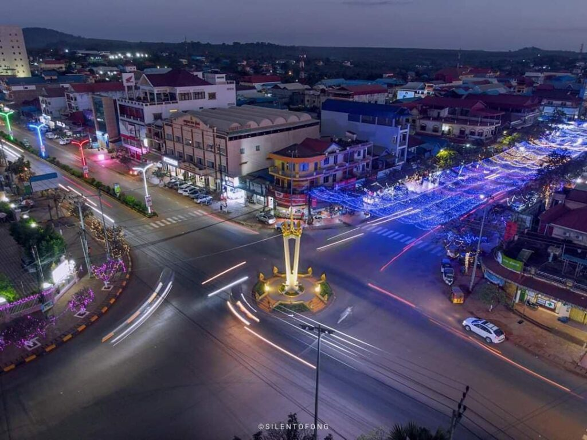

ការពិពណ៏នាអំពី ខេត្តនីមួយៗនៅក្នងប្រទេសកម្ពុជា
ទំព័រដើម
តាកែវ
ភ្នំពេញ
កែប
ព្រះសីហនុ
ស្វាយរៀង
កំពង់ធំ
បាត់ដំបង
ពោធ៏សាត់
សៀមរាប
រតនគីរី
មណ្ឌលគីរី
ក្រចេះ
ត្បូងឃ្មុំ
កំពង់ចាម
ព្រៃវែង
កណ្តាល
ឧត្តរមានជ័យ
កំពង់ឆ្នាំង
កំពង់ស្ពឺ
បន្ទាយមានជ័យ
កោះកុង
ប៉ៃលិន
កំពត
ស្ទឹងត្រែង
ព្រះវិហារ
ទំនាក់ទំនង
ខេត្តរតនគីរី

ព័ត៌មានសង្ខេបអំពីខេត្តរតនគីរី
> ខេត្តរតនគិរី គឺជាខេត្តមួយស្ថិតនៅភូមិភាគឦសាននៃប្រទេសកម្ពុជា។ ខេត្តរតនគិរីមានព្រំប្រទល់ខាងខាងកើតជាប់នឹងខេត្តកន្ទូម និងខេត្តយ៉ាឡាយ នៃសាធារណរដ្ឋសង្គមនិយមវៀតណាម ខាងលិចជាប់នឹងខេត្តស្ទឹងត្រែង ខាងជើងជាប់នឹងខេត្តអាត្តពឺ នៃសាធារណរដ្ឋប្រជាធិបតេយ្យប្រជាមានិតឡាវ និងខាងត្បូងជាប់នឹងខេត្តមណ្ឌលគិរី ហើយមានចម្ងាយ ៥៨៨គីឡូម៉ែត្រ ពីរាជធានីភ្នំពេញ ។ ខេត្តរតនគិរីជាខេត្តមួយដែលមានលក្ខណៈពិសេសជាងគេក្នុងចំណោមខេត្តដែលនៅភូមិភាគឦសានប្រទេសកម្ពុជា ដោយខេត្តមានតំបន់ទេសចរណ៍ធម្មជាតិជាច្រើនអនេក និងទេសចរណ៍វប្បធម៌ជនជាតិភាគតិចផងដែរ។
> ខេត្តរតនគិរី មានរស់នៅប្រហែលយុទ្ធសម័យលោហៈមកម្ល៉េះ ហើយការជួញដូររវាងតំបន់ខ្ពង់រាប និងទីប្រជុំជនតាមឈូងសមុទ្រថៃមានកាលបរិច្ឆេទយ៉ាងហោចណាស់សតវត្សទី៤ នៃគ.ស។ ចាប់ពីសតវត្សទី១៣ រហូតដល់សតវត្សទី១៩ ភូមិខ្ពង់រាបត្រូវបានវាយឆ្មក់ជាញឹកញាប់ដោយពួកកងទ័ពស៊ីឈ្នួញខ្មែរ លាវ និងសៀម។ តំបន់នេះត្រូវបានឈ្លានពានដោយពួកយួន និងថៃក្នុងកំឡុងសតវត្សទី១៨-១៩ ។ តំបន់នេះត្រូវបានវាតទីយកដោយពួកលាវនៅសតវត្សទី១៨ ហើយត្រូវបានពួកសៀមគ្រប់គ្រងនៅសតវត្សទី១៩។ តំបន់នេះត្រូវបានដាក់បញ្ចូលទៅក្នុងឥណ្ឌូចិនរបស់បារាំងនៅឆ្នាំ១៨៩៣ ហើយការគ្រប់គ្រងអាណានិគមបានជំនួសការជួញដូរទាសករ។ ជនជាតិបារាំងបានសាងសង់ចំការកៅស៊ូដ៏ធំ ជាពិសេសនៅ ឡាបានសៀក (ក្រុងបានលុងបច្ចុប្បន្ន)។ ពួកកម្មករជនជាតិដើមភាគតិចត្រូវបានប្រើប្រាស់សម្រាប់ការសាងសង់ និងការប្រមូលផលកៅស៊ូ។ ក្នុងពេលដែលស្ថិតនៅក្រោមការគ្រប់គ្រងរបស់បារាំង ទឹកដីដែលរួមមានរតនគិរីបច្ចុប្បន្នត្រូវបានផ្ទេរពីសៀមទៅលាវ រួចមកអោយកម្ពុជាវិញ។ ទោះបីជាក្រុមតំបន់ខ្ពង់រាបដំបូងបានប្រឆាំងនឹងអ្នកគ្រប់គ្រងអាណានិគមរបស់ពួកគេក៏ដោយ នៅចុងបញ្ចប់នៃសម័យអាណានិគមនៅឆ្នាំ១៩៥៣ ពួកគេត្រូវបានបង្ក្រាប។
> ខេត្តរតនគិរី ត្រូវបានបង្កើតឡើងនៅថ្ងៃអង្គារ ៩កើត ខែមាឃ ឆ្នាំច សំរឹទ្ធិស័ក ព.ស ២៥០១ ត្រូវនឹងថ្ងៃទី១៧ ខែកុម្ភៈ ឆ្នាំ១៩៥៩ ព្រះហស្ថលេខាដោយសម្តេច ព្រះនរោត្តម សុរាម្រិត តាមរយៈសំណើររបស់ទេសរដ្ឋមន្ត្រីទទួលបន្ទុកក្រសួងមហាផ្ទៃ ផូ ព្រឿង និងនាយករដ្ឋមន្ត្រីស្តីទី សុន សាន ដែលត្រូវបានកាត់ចេញពីខេត្តស្ទឹងត្រែង និងមានតំបន់រដ្ឋបាលនៅស្រុកអណ្តូងពេជ្រ (ស្រុកបរកែវនាពេលបច្ចុប្បន្ន) និងស្រុកលំផាត់ ដែលមានផ្ទៃដីសរុបចំនួន១០,៤៥០ គីឡូម៉ែត្រការ៉េ និងមានស្រុកចំនួន ០៣ គឺស្រុកវ៉ើនសៃ ស្រុកអណ្តូងពេជ្រ និងស្រុកលំផាត់។ ស្ថិតនៅក្នុងរបបសង្គមរាស្ត្រនិយមអតីតអភិបាលខេត្ត ដែលនៅក្នុងសម័យនោះហៅថា ប្រធានខេត្ត មានឈ្មោះលោកតា អ៊ុង ញ៉ច ត្រូវបានរាជរដ្ឋាភិបាល តែងតាំងឱ្យដឹកនាំខេត្តរតនគិរី ចាប់ពីឆ្នាំ១៩៥៩ ដល់ឆ្នាំ១៩៦៨ លោកតា ឈូ ស៊ាន ឆ្នាំ១៩៦៨ ដល់ឆ្នាំ១៩៧០ និងលោកតា សង្ស យៀវ ឆ្នាំ១៩៧០ បញ្ចប់ត្រឹមរដ្ឋប្រហារ លន់ ណល់។ស្ថិតនៅក្នុងសម័យសង្គមរាស្ត្រនិយម ក្រោមការដឹកនាំរបស់សម្តេចព្រះរមរតនកោដ្ឋ ខេត្តរតនគិរី ក៏ដូចជាខេត្តផ្សេងៗទៀត ប្រជាពលរដ្ឋបានរស់នៅប្រកបដោយសុខដុមរមនា។ ប៉ុន្តែជាអកុសលនៅថ្ងៃទី១៨ ខែមីនា ឆ្នាំ១៩៧០ រដ្ឋប្រហារដឹកនាំដោយលោកសេនាប្រមុខលន់ ណល់ បានវាយផ្តួលរំលំរបបដឹកនាំរបស់សម្តេចព្រះ នរោត្តម សីហនុ បង្កទៅជាសង្គ្រាមរ៉ាំរ៉ៃផ្ទៃក្នុងប្រទេស។បន្ទាប់ពីទម្លាក់សម្តេច ព្រះនរោត្តម សីហនុហើយ ឧត្តមសេនីយ៍ លន់ ណល់ បានប្រកាសបង្កើតសាធារណរដ្ឋខ្មែរ មាននិន្នាការងាកទៅរករបបដឹកនាំក្រុងវ៉ាស៊ីនតោន។រយៈពេល ៥ឆ្នាំក្រោយមកគឺនៅថ្ងៃ១៧ មេសា ឆ្នាំ ១៩៧៥ មានចលនាបះបោរជាថ្មីម្តងទៀតផ្តួលរំលំរបប លន់ ណល់ បានដួលរលំខ្ចាត់ខ្ចាយ ហើយចលនាកុម្មុយនីស្ត ប៉ុល ពត ឡើងមកកាន់កាប់ប្រទេសជំនួសវិញ។
> ខេត្តរតនគីរី មានស្រុកចំនួន ៨ ស្រុក និង ១ ក្រុង :
- ស្រុកបើកឃ្មុំ
- ស្រុកកោងសៀម
- ស្រុកលំផាត់
- ស្រុកអូរជុំ
- ស្រុកអូរយាដាវ
- ស្រុកតាវែង
- ស្រុកវ៉ែនសៃ
- ស្រុកអេកាហ្មុំ
- ក្រុងបានលុង